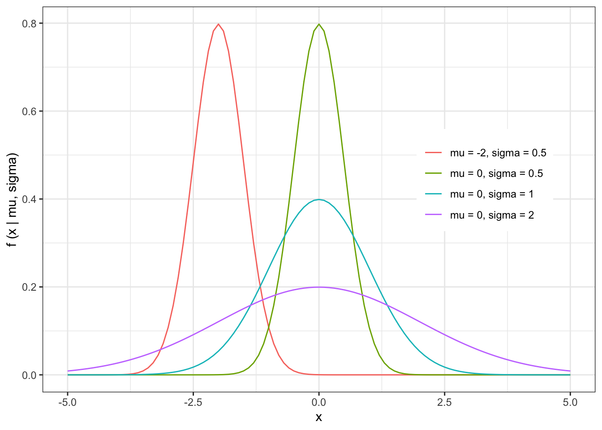
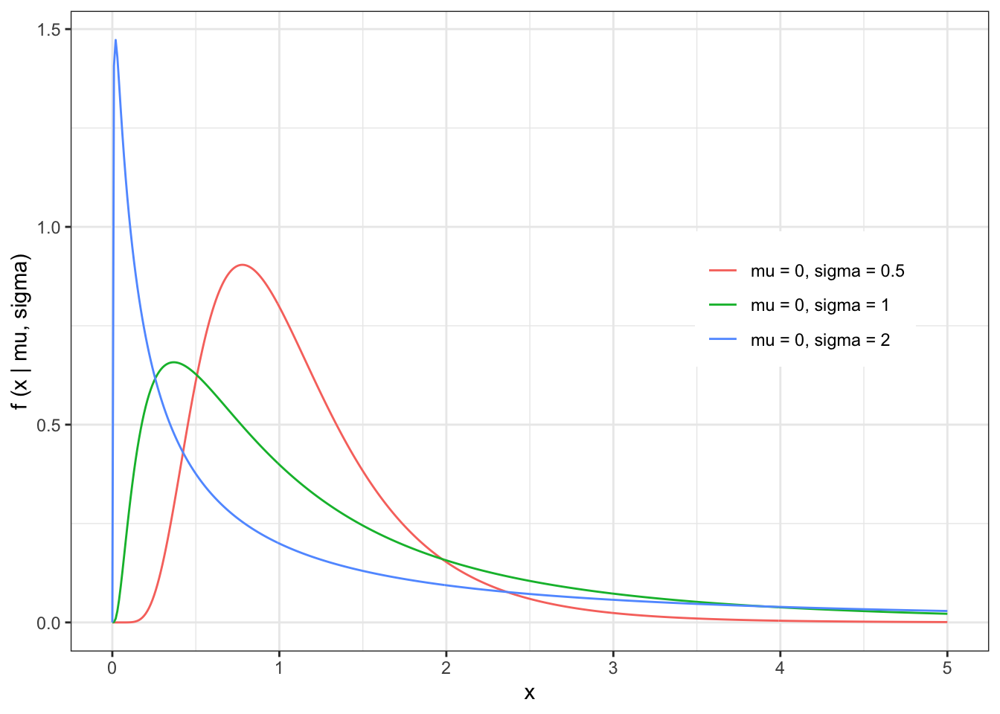
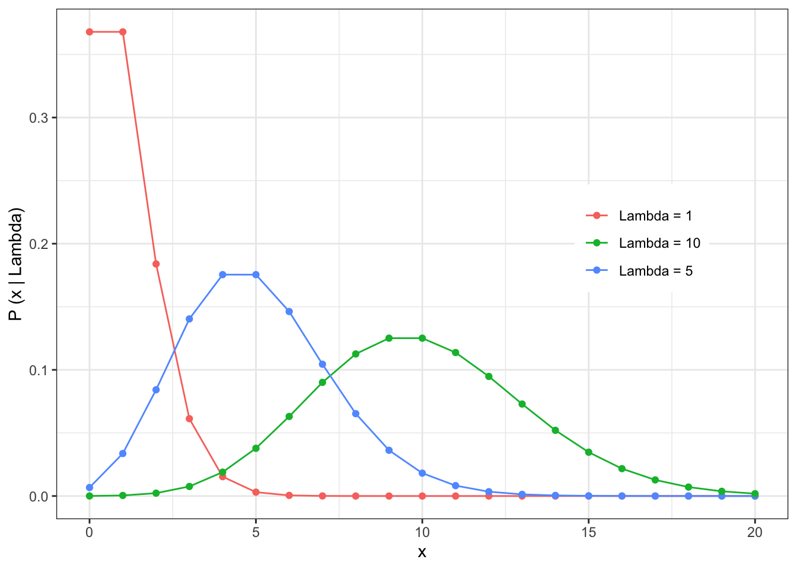
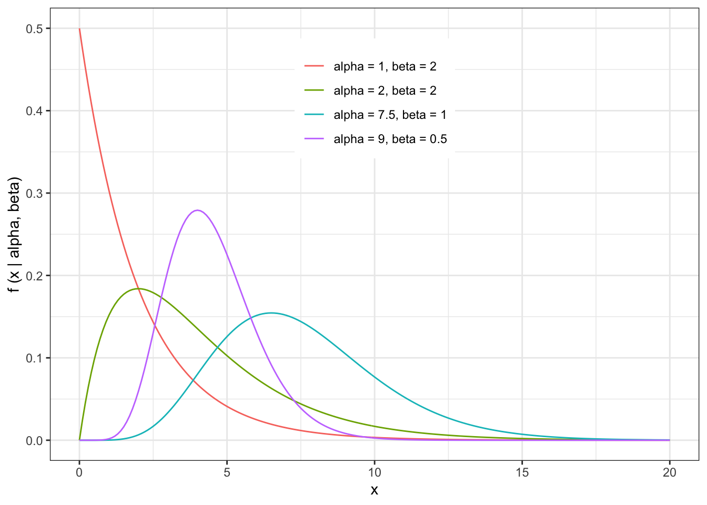

5 Week 3 Lecture
5.1 Week 3 Readings
For this week, I suggest reading Aho Chapter 3. The context of the problem set will make more sense if you skim Viswanathan et al. (2008) before doing the problem set (those interested in animal movement models should read the whole paper).
There is also a handout for this week here. Important - This figure has a typo. Please print it out and fix it. The arrow heads connecting the Normal distribution and the Standard Normal distribution should be reversed. We will discuss this in class as well so you understand why these arrows need to be reversed.
5.2 Overview of probability distributions
We will cover 7 distributions this week, and several more next week. Please refer to the handout if univariate distributions, and note that the arrows between Normal and Standard Normal need to be reversed.
For each distribution, there are five things I want you to know.
1 - Probability density function
2 - General Shape
3 - The expected value \(E[X]\)
4 - The variance \(E[X-E[X]]^2\)
5 - Relationship to other distributions
What is a probability density?
if \(f(x \mid params)\) is a probablity density function:
\[ P(a<x<b)=\int_a^bf(x \mid params)dx \]
Probablity at a single point is always zero but probablity density is not.
The probability density function is not restricted to being \(\le1\)
The integral over it’s range is always 1.
5.3 Normal (Gaussian) Distribution
The outcome is produced by small number effects acting additively and independently.
Normally distributed errors is the most common assumption of linear models.
Central Limit theorem!
The probability density function of the Normal distribution is given by
\[ f(x \mid \mu, \sigma) = \frac{1}{\sqrt{2 \pi \sigma^2}}e^{-\frac{(x-\mu)^2}{2\sigma^2}} \] \[ x \in \mathbb{R} \\ \mu \in \mathbb{R} \\ \sigma > 0 \]
The shape of the Normal distribution can be illustrated by a few examples

The expected value of the Normal distribution is given by
\[ \begin{align} E[X] &= \int_{-\infty}^{\infty}{X \cdot f(X)dX} \\ &= \int_{-\infty}^{\infty} x \cdot f(x \mid \mu, \sigma) = \int_{-\infty}^{\infty}\frac{x}{\sqrt{2 \pi \sigma^2}}e^{-\frac{(x-\mu)^2}{2\sigma^2}} dx \\ &= \mu \end{align} \]
The variance of the Normal distribution is given by
\[ \begin{align} Var[X] &= E[(X- E[X])^2] \\ &= E[(X - \mu)^2] \\ &= E[X^2] - \mu^2 \\ &= \left( \int_{-\infty}^{\infty} x^2 \cdot f(x \mid \mu, \sigma) = \int_{-\infty}^{\infty}\frac{x^{2}}{\sqrt{2 \pi \sigma^2}}e^{-\frac{(x-\mu)^2}{2\sigma^2}} dx \right) - \mu^2 \\ &= \sigma^2 \end{align} \]
5.4 Standard Normal Distribution
Raw data rarely fits standard normal.
Mostly useful as a theoretical construct in hypothesis testing.
The probability density function of the Standard Normal distribution is given by
\[ Z = \frac{X-\mu}{\sigma} \]
\[ f(z \mid \mu, \sigma) = \frac{1}{\sqrt{2\pi}}e^{-\frac{1}{2}z^2} \] While the letter used to represent a random variable is usually arbitrary (X usually, maybe Y), we use Z (or its specific incarnation z) to represent a random variable drawn from a Standard Normal distribution.
The expected value and variance of the Standard Normal distribution are given by
E[X] = 0
Var[X] = 1
Note that the Standard Normal distribution is a linear transformation of the Normal distribution (centered on zero with variance equal to 1).
5.5 Log-Normal Distribution
The outcome is produced by small number effects acting multiplicatively and independently.
Often used for things where small grows slowly and big grows quickly, such as forest fires or insurence claims.
The probability density function of the Log-Normal distribution is given by
\[ \begin{align} log(X) &\sim N(\mu,\sigma) \\ X &\sim LN(\mu,\sigma) \end{align} \]
\[ f(x \mid \mu, \sigma) = \frac{1}{x\sqrt{2 \pi \sigma^2}}e^{-\frac{(log(x)-\mu)^2}{2\sigma^2}} \\ x \in \{0,\infty\} \\ \mu \in \mathbb{R} \\ \sigma > 0 \]
The shape of the Log-Normal distribution can be illustrated with a few examples

The expected value and variance of the Log-Normal distribution is given by
- \(\mu\) is no longer the mean!
\[ E[X] = e^{\mu + \frac{\sigma^2}{2}} \]
- \(\sigma\) is no longer the variance!
\[ Var[X] = e^{2(\mu + \sigma^2) - (2\mu + \sigma^2)} \]
Note that if the log of a variable (X) has a Normal distribution
\[ log(X) \sim N(\mu,\sigma^{2}) \] than the variable X follows a Log-Normal distribution.
NB: Be careful when using the Log-Normal distribution. In particular, keep in mind that the sum of Log-normally distributed variables is NOT Log-Normally distributed.
5.6 Intermission: Central Limit Theorem
\[ X_1,X_2,X_3,...,X_k \sim N(\mu,\sigma^2) \\ S_n = \frac{1}{n} (X_1 + X_2 + X_3,...,X_n) \\ \lim_{n \to \infty} S_n \to N(\mu,\frac{\sigma^2}{n}) \]
X is i.i.d
X can be drawn from any distribution (with some very limited exceptions; distribution has to have finite moments)!
5.7 Poisson Distribution
The Poisson distribution arises principally in 3 situations:
1 - In the description of random spatial point patterns (disease events, complete spatial randomness)
2 - As the frequency distribution of rare but independent events
3 - As the error distribution in linear models of count data
The probability mass function of the Poisson distribution is given by
\[ P(x \mid \lambda)= \frac{e^{-\lambda} \cdot \lambda^x}{x!} \\ \lambda>0 \\ x \in \mathbb{N} \cup \{0\} \]
Note that when variables are discrete (i.e. when the distribution only produces integer numbers), we call the probability density function a probability mass function. The PDF and PMF play the same role in both cases.
The shape of the Poisson distribution is illustrated by a few examples

The expected value and variance of the Poisson distribution is given by
\[ \begin{align} E[X] &= \sum_{x=1}^{\infty} x \frac{e^{-\lambda} \cdot \lambda^x}{x!} \\ &= \lambda \cdot e^{-\lambda} \cdot \sum_{x=1}^{\infty} x \frac{\lambda^{x-1}}{x!} \\ &= \lambda \cdot e^{-\lambda} \cdot \sum_{x=1}^{\infty} \frac{\lambda^{x-1}}{(x-1)!}\\ &\mbox{define } y = x-1 \\ &= \lambda \cdot e^{-\lambda} \cdot \sum_{y=0}^{\infty} \frac{\lambda^{y}}{y!} \mbox{ (the sum is now the expansion of the exponential)}\\ &= \lambda \cdot e^{-\lambda} \cdot e^{\lambda} \\ &= \lambda\end{align} \]
\[ Var[X] = \lambda \]
The Poisson distribution has the following relationship to the Normal distribution:
\[ \lim_{\lambda \to \infty} Pois(\lambda) \to N(\lambda, \lambda) \]
The above limit can be understood in terms of ‘moment matching’. What are moments? Think of moments as being like characteristics of the distribution, but in decreasing order of importance. The first moment in the mean of the distribution (or, equivalently, the expected value E[X]). The second moment is the variance of the distribution, or Var[X]. The third moment is the skew of a distribution (assemmetry of left and right tails), the fourth momnent is the kurtosis (fatness of the tails), etc. Consider this, if I wanted to construct a Normal distribution that “looked” like a Poisson, I would want a Normal distribution that had the same moments as possible to the Poisson, so at the very least I would want that Normal distribution to have the same mean and variance. This is easy done with the Normal distribution because the mean and variance are two parameters that can be controlled independently, so we can simply set these memonts to match one another (just like the Poisson) and now we have a Normal distribution that has the key characteristic of the Poisson which is E[X]=Var[X]. Since we use the Greek letter \(\lambda\) to represent this parameter for the Poisson, we can use that same letter in the Normal to emphasize how these two distributions relate as \(\lambda \to \infty\). Note also that as \(\lambda \to \infty\), the values of the draws from Pois(\(\lambda\)) get very large and so the discreteness of the values approximates a continuous distribution like the Normal.
Note that the sum of Poisson distributed variables is itself Poisson distributed.
\[ \begin{align} X &\sim Pois(1) \\ Y &= \sum_{i=1}^{\lambda} X_i \\ Y &\sim Pois(\lambda) \end{align} \]
Applying the Central Limit Theorem
\[\begin{align} \bar{X} = \frac{Y}{\lambda} &\sim N(1,\frac{1}{\lambda}) \\ Y &\sim N(\lambda, \lambda) \end{align} \]
5.8 Binomial Distribution
The probability mass function of the Binomial distribution is given by
\[ P(x \mid p,n) = \frac{n!}{x!(n-x)!}p^x(1-p)^{n-x} \\ n \in \mathbb{N} \cup \{0\} \\ x \in \{0,1,2,3,...,n\} \\ p \in [0,1] \]
The shape of the Binomial distribution is illustrated by the following examples

The expected value and variance of the Binomial distribution is given by
\[ \begin{align} E[X] &= \sum_{x=1}^n x \frac{n!}{x!(n-x)!}p^x(1-p)^{n-x} \\ &=np \\ Var[X] &= np(1-p) \end{align} \]
The Binomial distribution has the following relationship to the Normal distribution
\[ \lim_{n \to \infty} Binom(n,p) \to N(np,np(1-p)) \]
5.9 Beta Distribution
One of the few distributions that is restricted to a finite interval (0 and 1).
Can be used to model proportions.
The probability density function of the Beta distribution is given by
\[ f(x \mid \alpha, \beta) = \frac{\Gamma(\alpha + \beta)}{\Gamma(\alpha) \Gamma(\beta)}x^{\alpha-1}(1-x)^{\beta-1} \\ \alpha>0 \\ \beta>0 \\ x \in (0,1) \]
Gamma Function: if n is a positive integer \(\Gamma(n)=(n-1)!\)
The shape of the Beta distribution is illustrated by the following examples

The expected value and variance of the Beta distribution is given by
\[ \begin{align} E[X] &= \int_0^1x\frac{\Gamma(\alpha + \beta)}{\Gamma(\alpha) \Gamma(\beta)}x^{\alpha-1}(1-x)^{\beta-1}dx \\ &= \frac{\alpha}{\alpha + \beta} \end{align} \]
\[ Var[X] = \frac{\alpha\beta}{(\alpha+\beta)^2 \cdot(\alpha + \beta + 1)} \]
The Beta Distribution’s relationship to the Normal and Uniform distributions are given by
\(Beta(1,1)\) is the same as \(Uniform(0,1)\)
\[ f(x \mid 1,1) = \frac{\Gamma(2)}{\Gamma(1) + \Gamma(1)}x^{0}(1-x)^{0} = 1 \] In the limit that \(\alpha\) and \(\beta\) are the same and growing large, the Beta distribution has the following relationship to the Normal distribution.
\[ \lim_{\alpha=\beta \to \infty} \to N(\frac{1}{2}, \frac{1}{8\alpha + 4}) \]
5.10 Gamma Distribution
Useful for variables that have a positive skew.
it is often used to model “waiting times”, such as the time before a device or machine fails.
The probability density function of the Gamma distribution (not to be confused with the Gamma Function) is given by
\[ f(x \mid \alpha, \beta) = \frac{1}{\beta^\alpha \Gamma(\alpha)} x^{(\alpha-1)} e^\frac{-x}{\beta} \\ \alpha>0 \\ \beta >0 \\ x>0\]
The shape of the Gamma distribution is illustrated by the following examples

The expected value and variance of the Gamma distribution is given by
\[ \begin{align} E[X] &= \int_0^\infty x\frac{1}{\beta^\alpha \Gamma(\alpha)} x^{(\alpha-1)} e^\frac{-x}{\beta} \\ &= \alpha\beta \end{align} \]
\[ Var[X] = \alpha\beta^2 \]
The relationship between the Gamma distribution and the Normal distribution is
\[ \lim_{\alpha \to \infty} Gamma(\alpha,\beta) \to N(\alpha \beta,\alpha\beta^2) \]
5.11 Some additional notes:
Please skim through the reading that has been posted “The Algebra of Expectations”. Focus on the “rules”.
I want to make sure everyone is clear on the distribution of Normal random variables.
If
\[ X\sim N(\mu,\sigma^{2}) \]
then the distribution of a new variable c*X (where c is a constant) is given by
\[ cX\sim N(c\mu,c^{2}\sigma^{2}) \]
The mean is simply multiplied by \(c\), and the variance is multiplied by \(c^{2}\).
To understand why this is, let’s first go into a more detailed derivation of the variance of the distribution of Normal random variables than we did in class. To begin with, you will need to know that one property of expectations is the following:
\[ E[ g(x) ] = \int g(x) f(x) \ dx \]
With this knowledge, let’s approach the derivation of the variance, where we are essentially defining \(g(x) = (X-E[X])^2\) and using some basic properties of algebra involving integrals. Note that in this derivation we are treating \(E[X]\) as a constant, and not as a function of \(x\).
\[ \begin{eqnarray} Var[X]&=&E[(X-E[X])^{2}] \\ &=&\int (x - E(X))^2 f(x) \ dx \\ &=&\int (x^2 -2xE(X) + E(X)^2 ) f(x) \ dx \\ &=&\int x^2 f(x) \ dx - 2E(X) \int x f(x) \ dx + \int E(X)^2 f(x) \ dx \\ &=& E(X^2) -2 E(X)^2 + E(X)^2 \\ &=& E(X^2) - E(X)^2 \end{eqnarray} \]
5.12 By the end of Week 3, you should understand…
the shape of each of the distributions introduced (including the range of support for x) and the number of parameters for each distribution. You should also know if the parameters have restrictions (e.g., non-negative, etc.)
the process by which you can find the E[X] and Var[X] for any parametric distribution. (In some cases, the integral might not be tractable.)
the relationships between the distributions
the PDFs for the Normal distribution, Standard Normal, Log-Normal, Binomial, and Poisson distributions